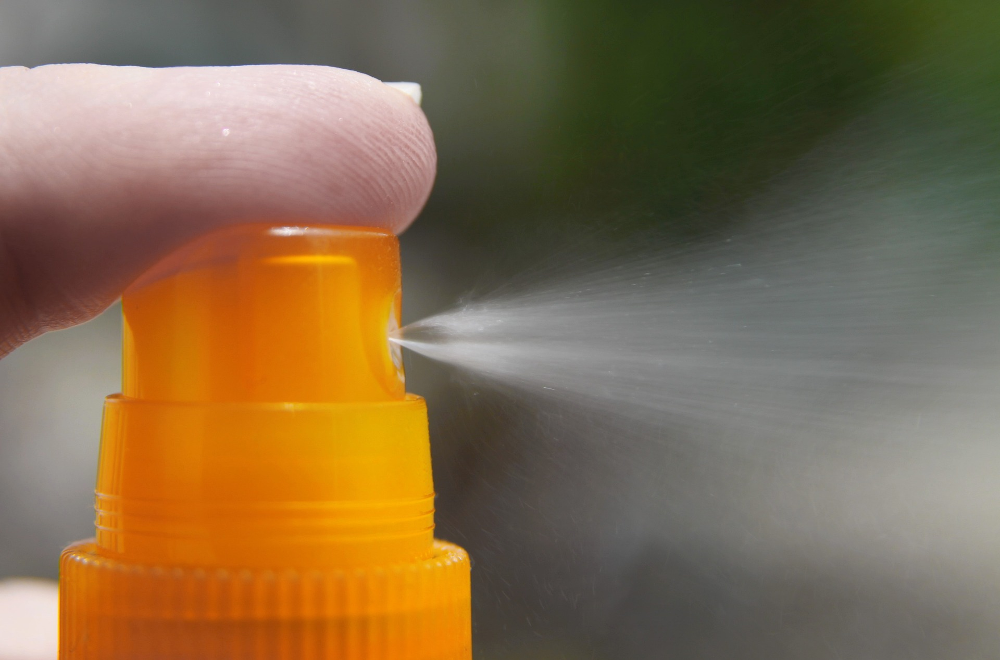

Twarz jest naszą wizytówką
Promieniowanie słoneczne jest nam potrzebne ze względu na syntezę witaminy D w organizmie i zbawienny wpływ na dobry nastrój i poziom energii. Jednocześnie niesie ze sobą wiele zagrożeń: w nadmiarze i bez odpowiedniej ochrony przyspiesza proces starzenia się skóry, może przyczyniać się do rozwoju czerniaka — choroby nowotworowej skóry oraz do nieprzyjemnych reakcji alergicznych.
Skrót SPF oznacza wskaźnik ochrony przeciwsłonecznej. Mnożąc czas, jaki możemy przebywać na słońcu bez poparzeń, przez wysokość faktora SPF uzyskujemy informacje, jak długo możemy chronić naszą skórę. Przykładowo, jeśli zazwyczaj ulegasz poparzeniu po 40 minutach ekspozycji na słońce, to nakładając krem z filtrem SPF 30, uzyskujesz ochronę na 120 minut, czyli dwie godziny. Po tym czasie warto wykonać ponowną aplikację, by przedłużyć działanie filtra.
